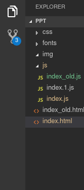
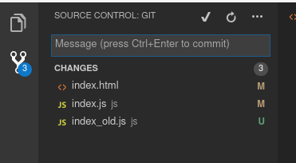
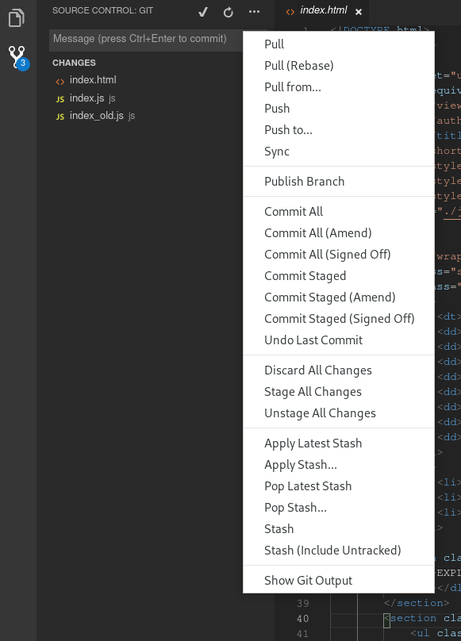
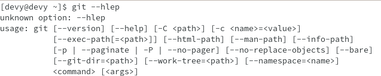
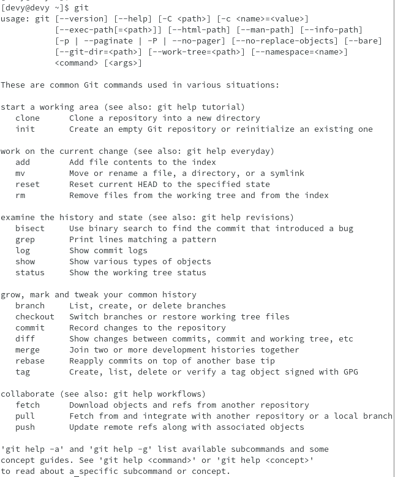

- Git이란?
-
VCS, SCM
VCS, SCM
VCS (Version Control System)
SCM (Source Control Management)
-
Git 이전의 도구들
CVS -> SVN
-
Git은 누가 만들었나?
리누스 베네딕트 토발즈
(줄여서 '리누스 토발즈')
(오픈소스계의 아이돌)
-
Git의 개발비화 - 1
원래 사용하던 버전관리 시스템은 BitKeeper
'하지만 BitKeeper에서 문제 발생'
-
Git의 개발비화 - 2
계속 쓸까?
or
다른 관리 시스템을 쓸까?
-
Git의 개발비화 - 3
그냥 만들어서 쓰지 뭐
-
Git의 개발비화 - 4
2주만에 만들었다?
-
Git의 개발비화 - 5
이로 인해 BitKeeper는
'유료였던 정책을 무료로 변경하고'
'Apache License로 소스까지 공개함'
(제발 BitKeeper도 좀 써달라고 ㅠㅠ)
- 얼마나 좋길래?
-
BitKeeper를 무료로 전환시킨...
지못미 BitKeeper
-
기존의 SVN
SVN
변경사항의 저장 및 관리를 서버에서...
-
SVN - 서버 필수
SVN
SVN서버가 연결되어있지 않으면 사용 못함
-
SVN - 복구의 어려움
SVN
서버가 날라가면 복구가 힘들다 -
하지만 Git은?
Git
변경사항의 저장 및 관리를 로컬에서
(git commit) -
GIT - 로컬에서 작업가능
Git
서버가 날라가도 '.git'을 통해 복구 가능
(git reset HEAD^) -
GIT - 팀 단위개발과 공유 용도
Git
서버는 팀단위 개발과 백업을 위한 용도
(git push, git pool)
- 어떠한 상황에서 유용할까?
-
작업을 나눠서 개발할때
작업 분담
A부분 - 영희 (git branch feature-a)
B부분 - 철수 (git branch feature-b)
C부분 - 영수 (git branch feature-c)
-
기능 단위로 작업할때
기능 단위 작업
사용자 추가 (git branch feature-add-user)
사용자 삭제 (git branch feature-remove-user)
사용자 수정 (git branch feature-mod-user)
-
버전별로 개발할때
버전별 작업
A버전 (git branch version-a)
B버전 (git branch version-b)
C버전 (git branch version-c)
-
과거의 소스상태로 되돌릴때
소스관리 (버전관리)
현재 작업하던 부분이 취소
이전 상태로 reset
(git reset)
-
작업 내용을 통합
여러 사람이 개발한 내용을 통합할때
(git merge)
- Git을 사용하기 전에...
-
Git의 영역
1. Working Directory
2. Staging Area 또는 Index
3. Repository 또는 .git 디렉토리
-
Working Directory??
Working Directory
실제 작업 영역
코딩하고 파일 추가하고...
변경을 가하는 영역
-
Staging Area??
Staging Area
작업한 내용들 중 저장하려고 고른 내용들의 영역
(작업한한 것중에 커밋할걸 골라볼까?)
-
.git Repository
.git Directory 또는 레포지터리
저장하려고 고른 내용을 저장한 영역
이력을 남긴다
(커밋!!)
- Git 명령
-
Git 프로젝트를 만들자
git init
git 프로젝트 생성
변경사항이 저장되는 .git 디렉터리가 생성
-
작업한 내용을 골라내자
git add
commit할 파일을 결정
(git add a.txt)
-
작업 내용을 저장하자
git commit
커밋하려고 골라낸 작업한 파일들을 저장
(git commit -m '작업한 내용'
- VSCODE Git
-
VSCODE는 Git을 기본으로 지원

-
Git 탭

-
Git 메뉴

-
먼저 알아야할 기능
Commit All
Commit Staged
Discard All Changes
Stage All Changes
Unstage All Changes
- Git GUI Tool
-
Git GUI 도구는 뭐가 있을까?
-
Git 탭
-
Git 메뉴
-
먼저 알아야할 기능
Commit All
Commit Staged
Discard All Changes
Stage All Changes
Unstage All Changes
- git을 공부하려면??
-
git 명령을 외우자! - git help
git --help

-
git 명령을 외우자! - git
git

-
git 공부하기 좋은 사이트
git-scm
git 간편 안내서
누구나 쉽게 이해할 수 있는 git 입문 Learn Git Branching
- github를 써보자
-
github.com